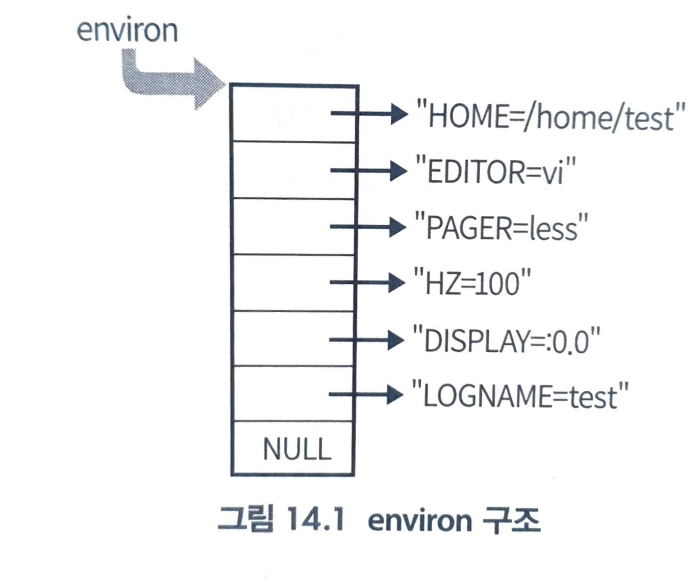

환경 변수 API environ, getenv()
환경 변수
- 환경 변수(environment variable)은 프로세스의 부모/자식 관계를 통해 전파되는 전역 변수같은 관계
- 항상 설정해 두고 싶은 값을 프로그램에게 전달
- 쉘에서는
env명령을 이용하면 전부 출력됨
$ echo $HOME
/home/pllpokko
| ENV | Description |
|---|---|
| HOME | 사용자의 홈 디렉터리 |
| PATH | 실행파일을 찾는 경로 |
| LANG | 프로그램 사용 시 기본 지원되는 언어 |
| PWD | 사용자의 현재 작업하는 디렉터리 |
| TERM | 로그인 터미널 타입 |
| SHELL | 로그인해서 사용하는 쉘 |
| USER | 사용자의 이름 |
| DISPLAY | X 디스플레이 이름 |
| VISUAL | visual 편집기의 이름 |
| EDITOR | 기본 편집기의 이름 |
| COLUMNS | 현재 터미널이나 윈도우 터미널의 컴럼 수 |
| PS1 | 명령 프롬프트 변수 |
| PS2 | 2차 명령 프롬프트. 명령 행에서 사용하여 명령 행을 연장 햇을 때 나타냄 |
| BASH | 사용하는 bash 쉘의 경로 |
| BASH_VERSION | bash의 버전 |
| HISTFILE | history 파일의 경로 |
| HISTFILESIZE | history 파일의 크기 |
| HISTSIZE | history에 저장되는 갯수 |
| HISTCONTROL | 중복되어지는 명령에 대한 기록 유무를 지정하는 변수 |
| HOSTNAME | 호스트의 이름 |
| LINES | 터미널의 라인 수 |
| LOGNAME | 로그인 이름 |
| LS_COLORS | ls 명령의 색상 관련 옵션 |
| 메일을 보관하는 경로 | |
| MAILCHECK | 메일 확인 시간 |
| OSTYPE | 운영체제 타입 |
| SHLVL | 쉘의 레벨 |
| TERM | 터미널 종류 |
| UID | 사용자의 UID |
| USERNAME | 사용자 이름 |
envirion 환경 변수의 전역 변수
- 환경 변수는 전역 변수 char ** environ을 통해 액세스 할 수 있다.

printf("%s\n", envrion[0]);
#include <stdio.h>
#include <stdlib.h>
extern char **environ;
int main(int argc, char *argv[]){
char **p;
for(p=environ; *p; p++){
printf("%s\n", *p);
}
exit(0);
}
주의! environ이 가리키는 주소는 putenv()로 이동할 수도 있으므로, 변수에 저장해 두고 나중에 접근해서는 안 된다.
getenv():3
#include <stdlib.h>
char *getenv(const char *name);
- 기능: 환경 변수인 *name의 값을 검색해 반환
| return | value |
| 성공 | *name 값의 환경 변수를 반환 |
| 실패 | NULL(No-Match) |
| parameter | Description |
| *name | 알고 싶은 환경 변수 |
주의! getenv()가 반환하는 문자열도 putenv()로 이동할 수도 있으므로, 값을 저장해 둔 채 반복해서 사용해서는 안 된다.
예제: $LANG을 읽어오는 간단한 프로그램
#include <stdlib.h>
#include <stdio.h>
int main(int argc, char *argv[]){
char *value=NULL;
value = getenv("LANG");
printf("$LANG is %s\n", value);
return 0;
}
- 환경 변수는 프로그램이 실행 시, 스택 영역에 복사된다.
C에서는 pointer를 이용해서 접근할 수 있도록 방법을 제시하고 있다. - 환경 변수가 저장된 스택의 주소는 main 함수의 3번 째 인자를 통해서 가져올 수 있다.
#include <stdio.h>
int main(int argc, char **argv, char **env){
while(*env != NULL){
printf("%s\n", *env);
*env++;
}
return 0;
}
- 환경 변수 전체 쉘에 띄운다.
setenv():3 환경 변수 값 설정
- 기능: setenv()를 이용시, 환경 변수 값 설정가능.
- "자신+자식"에만 설정한 환경 변수가 유효
#include <stdlib.h>
int setenv(const char *name, const char *value, int overwrite);
| Parameter | Description |
| *name | 셋팅할 환경 변수 이름 |
| *value | 환경 변수 값 |
| overwrite | 환경 변수가 이미 존재할 경우 값을 덮어쓸 것인지 결정한다. 1: true 0: 덮어쓰지 않는다. |
#include <unistd.h>
int main(){
setenv("TEST", "YUNDREAM", 1);
execl("/bin/bash", "bash", NULL);
}
$ echo $TEST # 설정 전엔 없는 환경 변수
$ echo $SHLVL
2
$ ./setenv # execl(자식)
$ echo $TEST # 환경변수 복사됨
YUNDREAM
$ echo $SHLVL
3
$ exit
exit
$ echo $TEST
$ echo $SHLVL
2